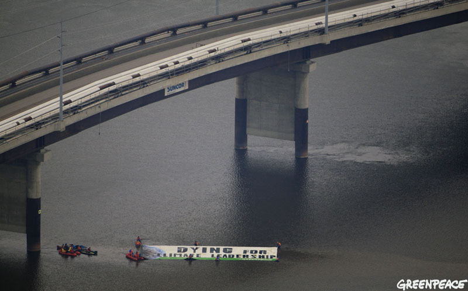
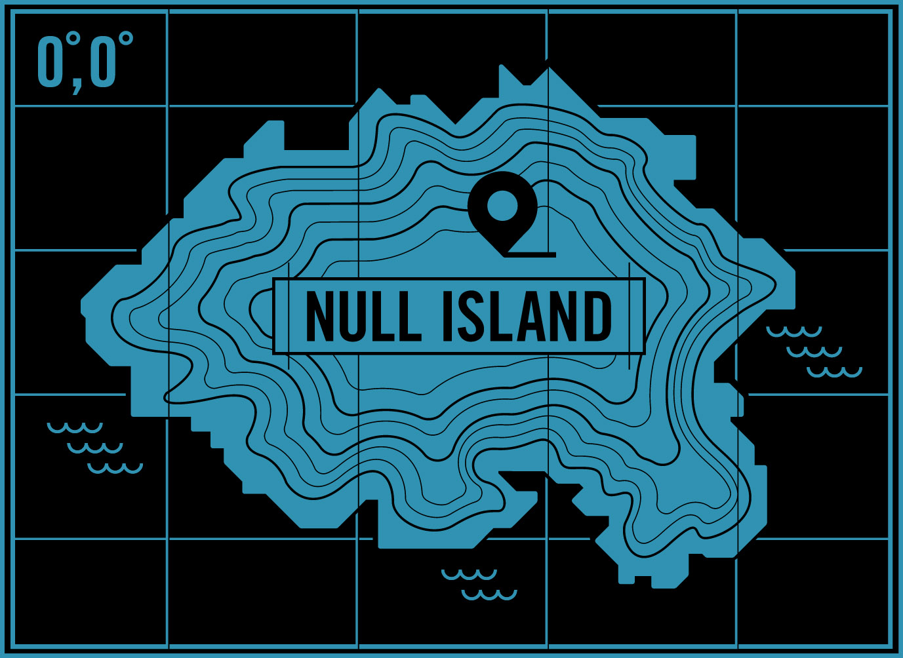
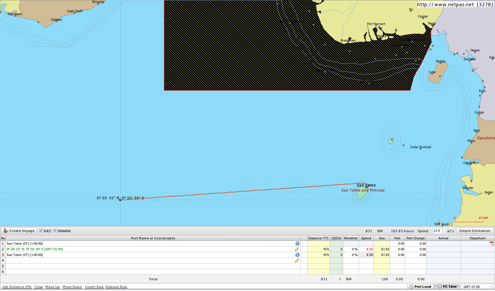
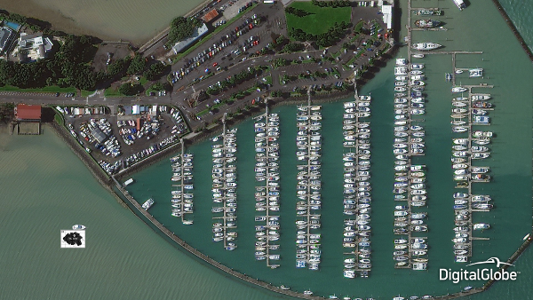
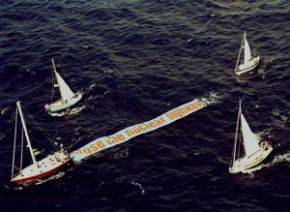

Setting Course for Null Island
Posted on Thu 04 August 2016 in Null Island
My wife was recently interviewed for an article in the Wall Street Journal about the fictional location Null Island. We got to talking about how hard would it be to actually charter a boat and go to where the NOAA PIRATA Buoy is moored. If we could do something interesting while we were there we might even be able to crowdfund the money for it. As it turns out, one of my previous jobs was getting people and boats to weird places and doing odd things once they were there.

The first thing I did was work out where the best place to charter a boat from would be. A first glance at the map would suggest Ghana, as it is the closest point on the African mainland and has at least two large commercial ports (Accra and Takoradi). From some of the Ghanian crew I've sailed with before, I recall them saying it was difficult to charter anything that wasn't a bulk commercial ship. Due to poor facilities and high piracy, there isn't much demand for smaller vessels of the type that would be in our price range. An extensive web search was fruitless. I knew I could get in touch with my former colleagues and they might even be able to find something, but the signs all pointed to São Tomé and Príncipe being a much better bet. With this as a starting point, I set down to plot out exactly how far the imaginary island was from the more real ones. The tool I have used for this purpose for many years is a nice little commercial application called Netpas Distance. Unfortunately I don't have my professional account any more, so the demonstration version only allows 3 distance calculations a day. That's usually all you need for simple things like this anyway.

The first thing I discovered was a bug in Netpas that won't let you set the position to 0.0N 0.0E! I found this particularly odd because I remember that we would frequently set our bearing to 0.0N 0.0E when we were trolling south for pirate fishing vessels off the coast of Sierra Leone. That was quite a few years ago now, but I remember that we did this because it was a common practice for this pirate fishing ships themselves. I guess they weren't using Netpas...

Well, a round trip of 830 Nautical Miles is perfectly feasible depending on the vessel. Working on the basis of 8 Knots, most boats of the right size would get around 5 gallons per hour. That would require roughly 500 gallons plus an extra 100 for reserve. A brief internet search yielded a few possible options and the contact information for a São Tomé and Príncipe Travel Agent that specialized in boat tours of the various Islands in the gulf. If anyone was going to know if there was a suitable boat for charter in the area, it would be them. So I fired them off a brief email and got to thinking about what me might do when we got there.

One of Kate's contacts had mentioned the possibility of one of their 'birds' taking a photo while we were there, using their new 30cm resolution cameras. This got me to thinking about what we could do that would be visible at that size. I've done a couple of floating banners over the years, so I've learnt a thing or two in the process particularly that size matters. The image above shows a 30x20m banner next to a 15m boat (the minimum we would need for such an expedition) in the bottom left hand corner. Not only is the banner design perfectly legible, it is also probably the biggest size you would want to attempt on the high seas. I've been involved in bigger floating banners, but they were being towed which makes a big difference. Should make for quite a nice easter egg somewhere!

So that's pretty much where I've gotten to so far, the next step will be getting some actual quotes on chartering the ship, flights, accommodation, satellite phone hire and banner construction. I can probably get the latter done by some friends in South Africa and shipped to São Tomé at a fairly reasonable price. Once we have these ballpark figures, we should be able to start putting together our crowdfunding proposal, including wacky video. Then you can give us all your money.
Stay tuned!